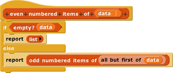

Suppose we have a list of numbers like this:
What we want is a list of the same numbers, in ascending order:

(There's no reason the items have to be numbers, as long as we have some way to order them, like the < operator for numbers. But numbers are easiest to talk about in this context.)
There are many different sorting algorithms. But the best one for recursively generated lists, and probably the most elegant, is called mergesort. Here's the idea in a nutshell: Divide the list in half; recursively sort each half; then merge the two sorted sublists. The base case is that an empty list or a one-item list is already sorted.
The easiest way to divide a list in half turns out to be putting the odd-numbered items in one half and the even-numbered items in the other. You do this with a recursion that skips over an item each time:


All the work here, basically, is done by the  in
in odd numbered items. This skips the second item and makes the recursive call on items 3 through the end of the list. Note that even numbered items is not directly recursive; it calls odd numbered items, not itself.
odd numbered items need two base cases?even numbered items that calls itself recursively instead of using odd numbered items.odd numbered items that uses (the original) even numbered items instead of calling itself recursively? That program structure (A calls B, B calls A) is called mutual recursion.